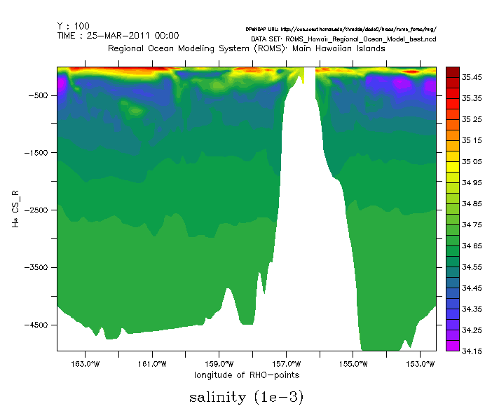
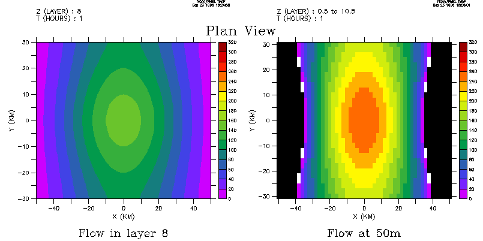
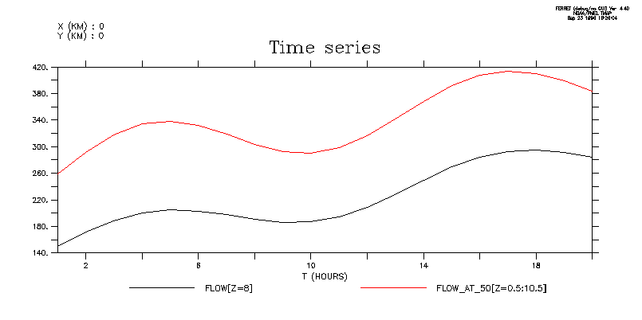
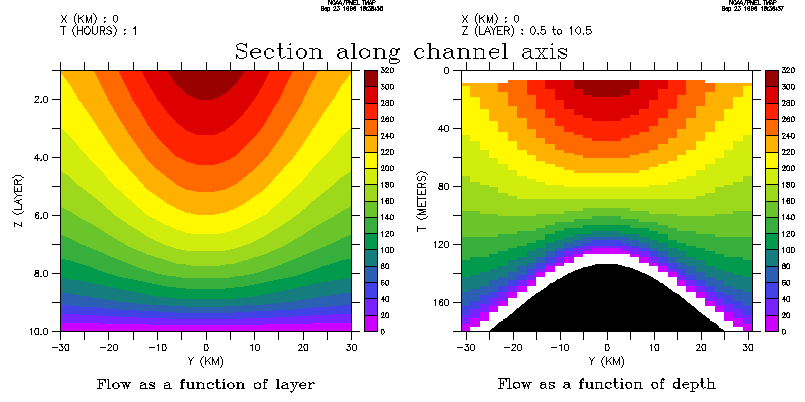

FAQ
Using sigma and curvilinear model coordinates
Using sigma and curvilinear model coordinates
Question:
How do I handle sigma coordinate output in Ferret?
How do I handle models based on curvilinear coordinates?
Example:

Explanation:
Ferret provides both graphical methods and analytical methods for dealing with sigma (and curvilinear) coordinates. The analytical methods involve regridding the sigma coordinates to a grid based on a true depth axis.The results of this method can then be combined in calculations with other depth-gridded fields (The same procedures apply to pressure-gridded fields.)The graphical methods are "faithful" in the sense that they do not involve regridding the data to another grid.
In this FAQ we will show two examples:
I) Open a dataset containing model data that uses a sigma-coordinate "stretching variable". From the dataset define variables to use for two techniques, a purely graphical one, and a second which regrids the data to a fixed Z axis.
Start by defining the "depth" function as the product of a bathymetry variable and the sigma-z stretching variable.
We will then demonstrate two methods for working with the data:
- purely graphical method using 3-argument SHADE and FILL commands
- Z axis replacement technique using ZAXREPLACE
II) begin by:creating an artificial sigma coordinate dataset.
define the "depth" function as the vertical integral of layer thickness and produce some reference plots from it. (In your application you may already have a depth variable.)
We will then demonstrate three methods for working with the data:
- Purely graphical method using 3-argument SHADE and FILL commands
- Z axis replacement technique using ZAXREPLACE
- Technique based on the @WEQ transformation.
Open a sigma coordinate data set:
Your model data might look like this:
yes? use "http://address/thredds/dodsC/directory/roms_forec/ROMS_Ocean_Model_best.ncd" yes? show dat currently SET data sets: 1> http://address/thredds/dodsC/directory/roms_forec/ROMS_Ocean_Model_best.ncd (default) name title I J K L M N HC S-coordinate parameter, critica ... ... ... ... ... ... CS_R S-coordinate stretching curves ... ... 1:30 ... ... ... H bathymetry at RHO-points 1:294 1:194 ... ... ... ... SALT salinity 1:294 1:194 1:30 1:6626 ... ... TIME_RUN run times for coordinate = time ... ... ... 1:6626 ... ...
Have a look at the attributes of the salinity variable
yes? show attr salt attributes for dataset: http://address/thredds/dodsC/directory/roms_forec/ROMS_Ocean_Model_best.ncd salt.units = 1e-3 salt.long_name = salinity salt.time = ocean_time salt.coordinates = time_run time s_rho lat_rho lon_rho salt.field = salinity, scalar, series salt._FillValue = NaN salt.standard_name = sea_water_salinity
The coordinates attribute tells us that the Z axis is to be given by the s_rho variable.
Define the "depth" function, and plot with a purely graphical method
The variable H is the bathymetry on the X-Y grid of our variable. We can define depth using the bathymetry and the sigma-coordinate stretching variable. Depth is the depth in meters, at the X-Y grid of SALT, and at each unitless z level of the grid of SALT.
Now use the 3 argument SHADE and FILL commands that directly plot data fields on "curvilinear coordinates". To display the field we need only create multidimensional fields specifying the horizontal and vertical positions associated with each data point to be plotted.
yes? let depth = cs_r* h yes? shade/y=100/L=1 salt[l=1], lon_rho, depth

Z axis replacement technique (using the ZAXREPLACE() function)
Define a Z axis and use ZAXREPLACE to regrid the data to this axis. Note: this demo is graphical but the procedure is valid for analysis as well.
This is the z axis that is used in the Levitus Climatology dataset. You can define any Z axis, with depth in meters matching the units of variable h.
yes? define axis/z/units=meters/depth zaxlevitr = \
{0,10,20,30,50,75,100,150,200,300,400,600,800,1000,1200,1500,2000,3000,4000,5000}Variable cs_r has negative values between -1 and 0, and our z axis refers to depth as positive down, so we'll change our definition of the depth variable, making its values positive depths as well.
yes? list cs_r VARIABLE : S-coordinate stretching curves at RHO-points DATA SET : Regional Ocean Modeling System (ROMS): FILENAME : ROMS_Ocean_Model_best.ncd FILEPATH : http://address/thredds/dodsC/directory/roms_forec/ SUBSET : 30 points (Z) -0.983 / 1: -0.9802 -0.95 / 2: -0.9260 -0.917 / 3: -0.8593 -0.883 / 4: -0.7862 -0.85 / 5: -0.7109 -0.817 / 6: -0.6366... yes? let depth = -1* cs_r* h yes? let/title="`salt,return=title`"/units="`salt,return=units`" salt_on_depth = zaxreplace (salt, depth, z[gz=zaxlevitr]) yes? fill/Y=100/L=1 salt_on_depth ! The image below yes? shade/z=10/L=1 salt_on_depth, lon_rho, lat_rho ! a single depth in meters, curvilinear in longitude/latitude
OR, Create an artificial sigma coordinate data set:
(Only needed for demonstration purposes)
Create variables to define a bottom bathymetry on a grid and a verticalsigma coordinate system of 10 layers. We will invent a (non-physical) flowfield in a channel.
The variables we create will be
- bathymetry: the bottom bathymetry for the model
- a channel with a rise along the axis of the channel
- h: layer thickness
- varies in X, Y, Z, and T in this example
- flow: the flow field
-
-
faster near surface
-
faster at mid-channel than near the edges
-
speeds up over the rise
-
speed increases with sinusoidal variation in time
-
See the Ferret script sigma_coordinate_demo.jnl for details of the variable definitions.
Define the "depth" function
The depth of each (x,y,k) grid point is computed by integrating h.We subtract h/2 because we want the depth of the midpoint of the layer.
let depth = h[k=@rsum]-h/2 set variable/title="DEPTH function"/unit=meters depth
Bathymetry and DEPTH(layer):

Solutions:
As of Ferret v4.9, you can use the 3 argument SHADE and FILL commands to directly plot data fields on "curvilinear coordinates". To display the field we need only create multidimensional fields specifying the horizontal and vertical positions associated with each data point to be plotted.
The following commands generate the graphic at the top of this page.
! regrid 'Y' to the data grid let ygg = y[g=gg] set variable/title="Y"/unit=kilometers ygg ! use the three argument 'shade' command shade flow[x=0,l=1], ygg, depth[x=0,i=1]
(See Chapter 6 for more information on the three-argument SHADE command.)
Run the sigma_coordinate_demo.jnl script for details of the variable definitions.
Note: this demo is graphical but the procedure is valid for analysis, as well
Define flow field on a surface of constant 50 m depth
DEFINE AXIS/Z=0:180:2/UNIT=meters/DEPTH zdepth LET flow_on_depth = ZAXREPLACE(flow,depth, z[gz=zdepth]) LET flow_at_50 = flow_on_depth[Z=50]
Plan views of flow. Right hand frame: SHADE/L=1 flow_at_50:
Note: the missing points between the flow and the black mask occur because the deepest layer of flow is considered to be 1/2 grid box above the bottom
PLOT/X=0/Y=0/L=1:20 flow[k=8], flow_at_50

Right hand frame: SHADE/Z=0:180/Y=0/L=1 flow_on_depth

Right hand frame: SHADE/Z=0:180/X=0/L=1 flow_on_depth

Technique (based on @WEQ transformation)
This presentation will solve precisely the same problems as the previous section, which is based on the ZAXREPLACE() function. See the sigma_coordinate_demo_weq.jnl for details of the variable definitions.
Visualize flow where z is a single fixed depth
Note: this demo is graphical but the procedure is valid for analysis,as well
Define flow field on a surface of constant 50 m depth
let kernel = depth[z=@weq:50] * flow let flow_at_50 = kernel[z=@sum]
Note: the missing points between the flow and the black mask occur becausethe deepest layer of flow is considered to be 1/2 grid box above the bottom.

Time series of flow: Visualize flow where the "view" of the data requires a rangeof depths

Note: the procedure is valid for analysis as well as graphics
This procedure (borrowed from depth_to_density_demo.jnl) requires us to "borrow" an axis orientation to serve as the new depth axis.We can only access a single point location along whatever axis we borrow-- though that point can be any point of the axis. In this example we will borrow the TIME axis -- thus we can produce plots only at L=1, L=2, etc..If we desired to produce a time series plot we would have to borrow theX or the Y axis, instead.
It takes just 5 commands to transform layers to depth in this manner:
! in a new grid replace the (borrowed) time axis with the desired depth axis define axis/t=0:180:2/unit=meters tdepth define grid/like=gg/t=tdepth ggdepth ! define a new variable, r0, with a value of zero wherever depth equals its ! coordinate on the tdepth axis (r0 is a 4-dimensional variable with ! depth in the T axis slot) ! Note that "L=1" here and in the definition of kflow, below, determine ! the fixed value on the TIME axis at which this calculation takes place let r0 = depth[l=1] - t[g=ggdepth] ! define a new variable, kflow, which, when summed along the Z axis, will give ! the (single) value of flow at the location where depth equals its own ! coordinate on the tdepth axis let kflow = r0[z=@weq:0] * flow[l=1] ! sum the variable (integrate) along the Z axis. Since the Z axis reduces ! to a point in this operation the result is 3D - X,Y and depth. let flow_on_depth = kflow[z=@sum]
Again, Cross-channel section of the flow; and Along-channel sections of flow:

